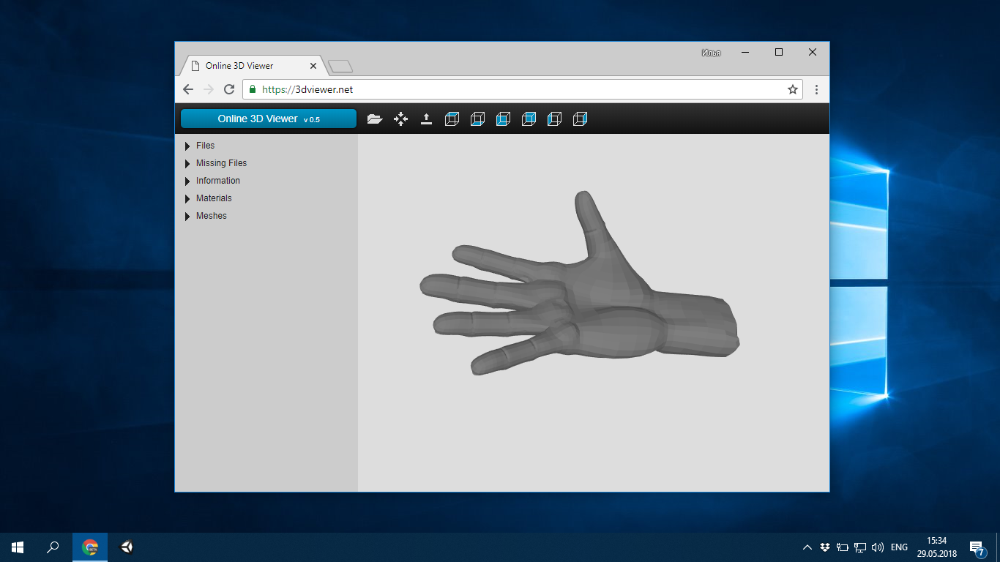
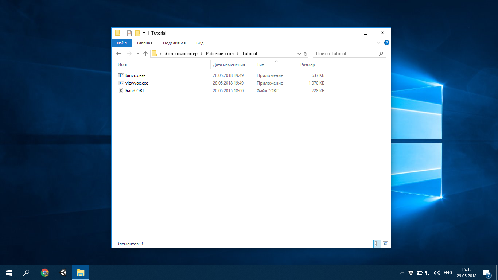
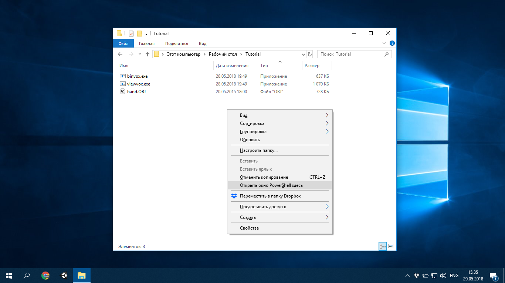
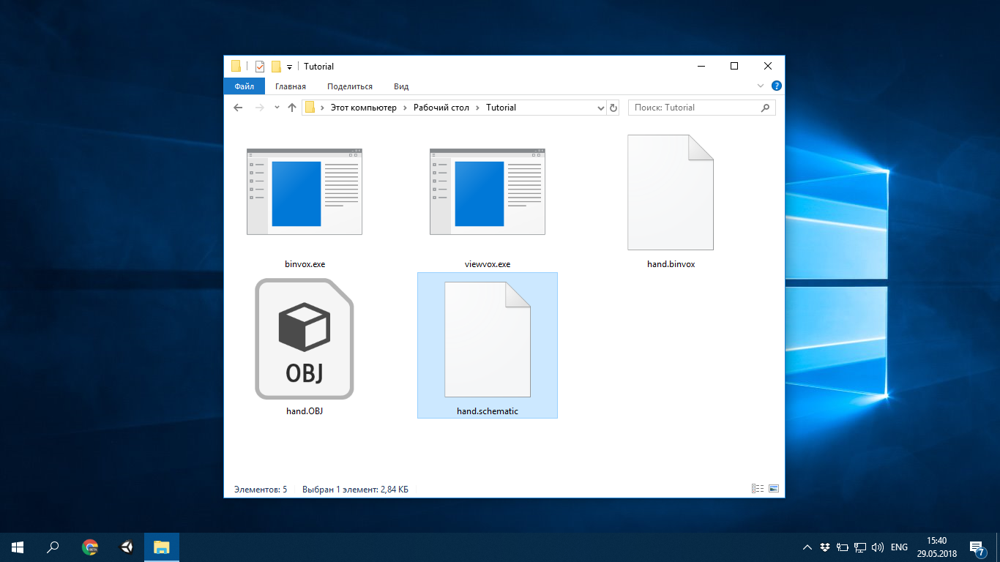

Хранилище - Разное
Всем привет! Сегодня мы поговорим о переводи обычных 3D-моделей в "кубический" вариант. Для начала работы нам нужно две программы: binvox и viewvox. Стоит заметить, что данные программы должны запускаться через консоль.
Итак, давайте начнём. Сначала нам нужна модель. Binvox поддерживает только следующие форматы моделей: Wavefront OBJ, VRML 2.0, UG, OFF, DXF, XGL, POV, BREP, PLY и JOT. Я взял модель руки.
Теперь все файлы переносим в удобное для вас место. Я для этого создал папку Tutorial.
После переноса всех файлов нужно открыть консоль. Если в Линуксах можно через ПКМ -> Open Terminal, то в Винде надо держа Shift нажать на ПКМ и только тогда у вас будет опция "Открыть окно PowerShell здесь" или "Открыть окно команд здесь". Жмём по нему и видим синие окно PS или чёрное окно CMD.

Всё. Приготовления закончены, можно приступать. Вводим команду ./binvox -d 64 -c hand.obj, где 64 это размер сетки (мы к этому ещё вернёмся) и hand.obj это наша модель. После ввода жмём Enterи ждём завершения преобразования.
После преобразования вводим ./viewvox hand.binvox. "hand.binvox" - это файл который мы только что создали. Перед нами появляеться окно с "кубической" моделью.
Если Вам всё нравиться, то можно теперь создать более привычный для Майна файл - Schematic. Вводим тоже самое, что и в начале, только уже приписываем -t schematic. Должно выйти примерно так: ./binvox -d 64 -c hand.obj -t schematic. После ввода и нажатия на Enter просто снова ждём.
На выходе в папке с Binvox получаем наш готовый файл Schematic!

Теперь коротко о -d 64. -d задаёт размер решётки (стороны) в которую преобразуют нашу модель. В данном туториале я написал 64, значит что моя модель не будет превышать размеры куба 64x64x64.